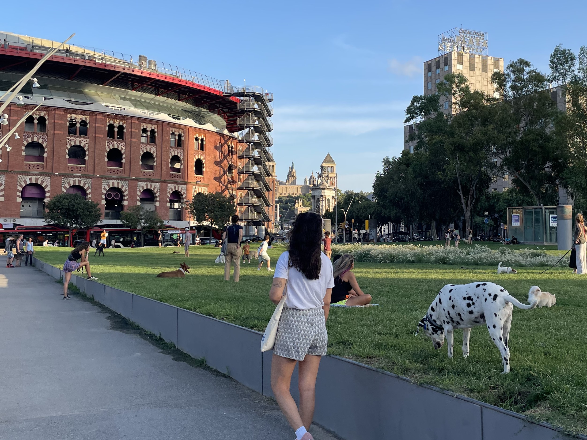

03 Aankomst in
Barcelona
Over de de drukte van de stad,
het missen van alledaagse spullen
en bekend bezoek

Na de eerste twee blogs gelezen te hebben met een paar hints zoals het warme zuiden, zullen jullie ongetwijfeld graag willen horen welke bestemming ik voor de expat experience heb gekozen. Ik zal jullie niet langer in spanning houden, de stad is: Barcelona! De vraag die veel mensen stelden omdat ze al op de hoogte waren, was ‘Maar waarom dan Barcelona?’ en wanneer ik dan zei onder andere voor het weer en de relaxte cultuur dan reageerden mensen vaak begripvol. Het is de stad waar mijn lieve vader ons ooit een stierenarena wilde laten zien, waarna hij twee wijsvingers op zijn hoofd plaatste en vroeg aan een politieagent ‘Torro torro?’.
 Het waren voor mij drie doldwaze eerste dagen waarover ik een verslagje typ vanuit het terras van koffietent Gallicia bij mij om de hoek. Waar veel reizigers een cultuurshock ervaren was ik in eerste instantie meer overdonderd door de drukte van de 7 miljoen mensen in deze gigantische stad. In Wageningen was je met 5 minuutjes lopen in de uiterwaarden, terwijl hier, zelfs in mijn relatief rustige wijk Sants, de straten tot diep in de nacht vol zijn met auto’s, ambulances, blaffende honden en luidruchtige terrasgangers. Iedere straat zo druk en het getoeter vanuit mijn slaapkamer goed hoorbaar. Om de enorme drukte in goede banen te kunnen lijden hebben ze voor eenrichtingsstraten gekozen. Zodra het stoplicht op groen springt, blijft het ook een flinke poos groen en verplaatsen hele hordes mensen zich op deze manier door de Catalaanse hoofdstad. Vanaf thuis leek het een en al geweldig om naar Barcelona te gaan, maar bij aankomst was het toch wel enorm wennen omdat het nog helemaal niet als je eigen stad aanvoelt. Zo waren simpele praktische belemmeringen onderdeel hiervan. Even sporten doet de mens vaak goed, maar hoe ga je hardlopen als je om de minuut een stoplicht tegenkomt wat een eeuwigheid op rood blijft staan? Nou bijvoorbeeld door halverwege de straat schuin over te steken, zo zag ik een Spanjaard dat ook doen en goed voorbeeld doet volgen. Waar wij in Nederland gewend zijn om rechts aan te houden lopen ze hier totaal willekeurig over straat en net op het moment dat je ze bijna tegen het lijf loopt verschijnt er een verbaasde blik en draaien ze een beetje bij.
Het waren voor mij drie doldwaze eerste dagen waarover ik een verslagje typ vanuit het terras van koffietent Gallicia bij mij om de hoek. Waar veel reizigers een cultuurshock ervaren was ik in eerste instantie meer overdonderd door de drukte van de 7 miljoen mensen in deze gigantische stad. In Wageningen was je met 5 minuutjes lopen in de uiterwaarden, terwijl hier, zelfs in mijn relatief rustige wijk Sants, de straten tot diep in de nacht vol zijn met auto’s, ambulances, blaffende honden en luidruchtige terrasgangers. Iedere straat zo druk en het getoeter vanuit mijn slaapkamer goed hoorbaar. Om de enorme drukte in goede banen te kunnen lijden hebben ze voor eenrichtingsstraten gekozen. Zodra het stoplicht op groen springt, blijft het ook een flinke poos groen en verplaatsen hele hordes mensen zich op deze manier door de Catalaanse hoofdstad. Vanaf thuis leek het een en al geweldig om naar Barcelona te gaan, maar bij aankomst was het toch wel enorm wennen omdat het nog helemaal niet als je eigen stad aanvoelt. Zo waren simpele praktische belemmeringen onderdeel hiervan. Even sporten doet de mens vaak goed, maar hoe ga je hardlopen als je om de minuut een stoplicht tegenkomt wat een eeuwigheid op rood blijft staan? Nou bijvoorbeeld door halverwege de straat schuin over te steken, zo zag ik een Spanjaard dat ook doen en goed voorbeeld doet volgen. Waar wij in Nederland gewend zijn om rechts aan te houden lopen ze hier totaal willekeurig over straat en net op het moment dat je ze bijna tegen het lijf loopt verschijnt er een verbaasde blik en draaien ze een beetje bij.
 Ons appartement ligt in de wijk Sants. Vanuit hier kan je het beste hardlopen richting Montjuïc, wat je wellicht niets zegt, maar dit is een gigantisch kasteel op een berg waar in 1992 nog de olympische spelen zijn gehouden. Het zoeken van een appartement in Barcelona is een verschrikkelijk karwij vanwege het toenemende aantal expats die in Barcelona komen wonen. Het duurde even maar gelukkig had ik twee weken voor vertrek bingo met een gemeubileerde kamer op de zevende verdieping in een gerenoveerd vierpersoonsappartement in de bruisende familiewijk Sants. Nou ja gerenoveerd, bij aankomst stond het huis vol met bouwvakkers omdat allerlei kamers nog niet af waren, maar ik kreeg wel een erg warm welkom van huisbaas Diana, een 30 jarige vrouw uit Barcelona die direct wat eerste tips gaf over biologische en culinaire supermarkten. Hoewel goed bedoeld, gaf mijn onderbuikgevoel aan dat ik beter eerst even de vertrouwde en goedkope Lidl kon gaan bezoeken. Ondanks de harde Spaanse muziek was het genieten om vertrouwde producten zoals die grote oranje zak fruit muesli te kopen wetende dat je met die spullen de komende tijd in ieder geval even vooruit kan.
Ons appartement ligt in de wijk Sants. Vanuit hier kan je het beste hardlopen richting Montjuïc, wat je wellicht niets zegt, maar dit is een gigantisch kasteel op een berg waar in 1992 nog de olympische spelen zijn gehouden. Het zoeken van een appartement in Barcelona is een verschrikkelijk karwij vanwege het toenemende aantal expats die in Barcelona komen wonen. Het duurde even maar gelukkig had ik twee weken voor vertrek bingo met een gemeubileerde kamer op de zevende verdieping in een gerenoveerd vierpersoonsappartement in de bruisende familiewijk Sants. Nou ja gerenoveerd, bij aankomst stond het huis vol met bouwvakkers omdat allerlei kamers nog niet af waren, maar ik kreeg wel een erg warm welkom van huisbaas Diana, een 30 jarige vrouw uit Barcelona die direct wat eerste tips gaf over biologische en culinaire supermarkten. Hoewel goed bedoeld, gaf mijn onderbuikgevoel aan dat ik beter eerst even de vertrouwde en goedkope Lidl kon gaan bezoeken. Ondanks de harde Spaanse muziek was het genieten om vertrouwde producten zoals die grote oranje zak fruit muesli te kopen wetende dat je met die spullen de komende tijd in ieder geval even vooruit kan.
 In aanloop naar vertrek heb ik nog een groot deel van mijn bagage moeten opofferen omdat ik als programmeur in wording per se het computerscherm waar ik zo aan gehecht ben in mijn koffer wilde meenemen. Omdat ik een beetje op de kleintjes zal moeten gaan letten was het aanschaffen van vershoudbakjes een slimme zet waardoor ik veel eten kan maken en het in meerdere porties kan bewaren. Ik voelde mij super blij en voldaan toen ik deze in mijn handen had bij Ikea, waar ik ook nog een topper kocht voor op het spijkerharde matras, een plantje voor de decoratie en een dekbed. Foto’s van familie en vrienden hangen aan de muur. Al deze toevoegingen zorgen ervoor dat de kamer een klein beetje meer vertrouwd gaat voelen.
In aanloop naar vertrek heb ik nog een groot deel van mijn bagage moeten opofferen omdat ik als programmeur in wording per se het computerscherm waar ik zo aan gehecht ben in mijn koffer wilde meenemen. Omdat ik een beetje op de kleintjes zal moeten gaan letten was het aanschaffen van vershoudbakjes een slimme zet waardoor ik veel eten kan maken en het in meerdere porties kan bewaren. Ik voelde mij super blij en voldaan toen ik deze in mijn handen had bij Ikea, waar ik ook nog een topper kocht voor op het spijkerharde matras, een plantje voor de decoratie en een dekbed. Foto’s van familie en vrienden hangen aan de muur. Al deze toevoegingen zorgen ervoor dat de kamer een klein beetje meer vertrouwd gaat voelen.
 Doldwaze dagen, ik zei het al waarin ik soms mijn geluk niet op kon en het volgende moment mezelf een hoopje ellende kon voelen. De reis naar Barcelona ging voorspoedig. Na afscheid te hebben genomen van mijn lieve moeder op Eindhoven Airport bracht het Ryanair vliegtuig mij over de Pyreneeën naar vliegveld Reus, op twee uurtjes van Barcelona. Terwijl ik bij aankomst in Reus in de brandende zon aan het uitzoeken was hoe ik in Barcelona kon komen, liep ik de gepensioneerde kunstenaars Jan en Tom tegen het lijf die ook Barcelona als eindbestemming hadden. Ze vertelden mij over hun oude dag die net begonnen was en het vakantiehuis aan zee wat ze, nu er meer tijd was, graag wat vaker wilden gaan bezoeken. Ze trakteerden mij op koffie en we reisden samen met de bus naar Barcelona. Beiden waren erg nieuwsgierig naar mijn plannen en luisterden met blikken vol enthousiasme en met een vleugje verlangen naar de jaren die achter hen lagen. Ze lieten merken dat ze het ontzettend gaaf vonden dat ik deze stap in mijn leven ging nemen. De buschauffeur discussieerde minuten met de passagiers over de plek waar hij ze kon afzetten, waar dat gesprek in Nederland waarschijnlijk in een paar zinnen zou zijn afgerond. Bij aankomst op mijn kamer daalde de enorme euforie van de reis en zat ik alleen in mijn kale nieuwe kamer. ‘Wat doe ik hier eigenlijk?’ , dacht ik. De avond viel en de Barcelonezen verzamelden zich massaal in de parken, totaal niet kritisch op waar ze plaats namen zoals bijvoorbeeld aan de rand van het park pal naast een drukke weg op een stenen muurtje. Een groepje vrouwen aan het brijen, twee frisbeeënde jonge pubers met tattoos en piercings, een moeder die haar baby publiekelijk borstvoeding geeft of een zeer schaars geklede dame. Het lijkt allemaal net wat rauwer hier. Na zonsondergang kwamen de meest schimmige figuren tevoorschijn met blikjes bier en bluetooth speakers waarvan een deel op slaap zou overnachten.
Doldwaze dagen, ik zei het al waarin ik soms mijn geluk niet op kon en het volgende moment mezelf een hoopje ellende kon voelen. De reis naar Barcelona ging voorspoedig. Na afscheid te hebben genomen van mijn lieve moeder op Eindhoven Airport bracht het Ryanair vliegtuig mij over de Pyreneeën naar vliegveld Reus, op twee uurtjes van Barcelona. Terwijl ik bij aankomst in Reus in de brandende zon aan het uitzoeken was hoe ik in Barcelona kon komen, liep ik de gepensioneerde kunstenaars Jan en Tom tegen het lijf die ook Barcelona als eindbestemming hadden. Ze vertelden mij over hun oude dag die net begonnen was en het vakantiehuis aan zee wat ze, nu er meer tijd was, graag wat vaker wilden gaan bezoeken. Ze trakteerden mij op koffie en we reisden samen met de bus naar Barcelona. Beiden waren erg nieuwsgierig naar mijn plannen en luisterden met blikken vol enthousiasme en met een vleugje verlangen naar de jaren die achter hen lagen. Ze lieten merken dat ze het ontzettend gaaf vonden dat ik deze stap in mijn leven ging nemen. De buschauffeur discussieerde minuten met de passagiers over de plek waar hij ze kon afzetten, waar dat gesprek in Nederland waarschijnlijk in een paar zinnen zou zijn afgerond. Bij aankomst op mijn kamer daalde de enorme euforie van de reis en zat ik alleen in mijn kale nieuwe kamer. ‘Wat doe ik hier eigenlijk?’ , dacht ik. De avond viel en de Barcelonezen verzamelden zich massaal in de parken, totaal niet kritisch op waar ze plaats namen zoals bijvoorbeeld aan de rand van het park pal naast een drukke weg op een stenen muurtje. Een groepje vrouwen aan het brijen, twee frisbeeënde jonge pubers met tattoos en piercings, een moeder die haar baby publiekelijk borstvoeding geeft of een zeer schaars geklede dame. Het lijkt allemaal net wat rauwer hier. Na zonsondergang kwamen de meest schimmige figuren tevoorschijn met blikjes bier en bluetooth speakers waarvan een deel op slaap zou overnachten.
Drie keer eerder bezocht ik Barcelona waar ik een aantal mensen ontmoette die hier vandaag de dag nog steeds beken te wonen. Toch voelde het als een enorme drempel om hen te vragen of ze zin hadden om iets samen te doen omdat je toch een soort van in iemands leven breekt. Toen ik mij dus echt even wat rot voelde kwam er plotseling een appje binnen van mijn broer Jelte die een vriendenweekend had en je raad de eindbestemming al: Barcelona! Ik had mijn koffers amper uitgepakt of ik voegde me bij de jongens die mij op sleeptouw namen met een hoop shotjes tot de barman het welletjes vond. Vervolgens bezochten we de club van Barcelona ‘Razz Matazz’ wat de avond compleet maakte. Een heerlijk spontaan en vertrouwd avondje, maar dat gevoel was van korte duur omdat ik mij erna toch ook weer een beetje eenzaam voelde waarbij de kater natuurlijk niet hielp. Hoewel het nog behoorlijk wennen is, had ik wel al het gevoel dat het hier erg leuk zou kunnen worden. Ik heb toen wat lijntjes uitgegooid voor Spaanse les en salsa les wat ik in Nederland ook heb gedaan en ik verwacht dat een beetje structuur aan de week mij goed zal doen.
 Twee jongens die ik in Barcelona ontmoette in de zomer van 2020 toen ik een Spaanse talencursus deed, zijn de 34 jarige Engelse mariene officier Greg uit Newcastle en de 33 jarige Engelse muzikant Daniel uit Derbyshire. Toen ik de moed had verzameld om hen te appen, kreeg ik eigenlijk direct een uitnodiging voor een feestje wat zou plaatsvinden in het voor mij onbekende W hotel. Greg houdt heel erg van luxe evenementen, vaak op de meest onmogelijke plekken. Ik was hierdoor al nieuwsgierig naar waar hij mij voor had uitgenodigd. Het W hotel bleek de blikvanger van Barcelona te zijn, een 5sterrenhotel waar overnachtingen beginnen vanaf €400. Je gelooft het niet, het feest was gratis. ‘How can a party like this be 0 euro?’ vroeg ik Greg, waarna hij antwoordde ‘Because you are spending 9 euros on a beer mate’. Tot 11 uur ’s avonds werd er gedanst aan het zwembad waarna verplaatste het feest zich naar de 26e verdieping van het gebouw om hier, omgeven door de skyline van Barcelona verder te feesten. Alles van marmer, prachtig verlicht en meubelstukken in de gekste vormen. Toiletramen van boven tot onder met uitzicht op de zee. Een ongekende ervaring. Gek genoeg voelde het weerzien met Greg en Daniel alsof ik herenigd werd met twee goede vrienden, terwijl ik twee jaar geleden slechts twee weken met heb opgetrokken. In ieder geval waren de eerste contacten gelegd. Ook was de eerste huisgenoot, de 24 jarige Pouya uit Sri Lanka gearriveerd, een super lieve meid met een enorme bak energie. Ze is niet op haar mondje gevallen want ze flapte direct de vraag eruit ‘Don’t you have social pressure from your mom beceause you are 30 and still not married?’. Alles behalve saai dus!
Twee jongens die ik in Barcelona ontmoette in de zomer van 2020 toen ik een Spaanse talencursus deed, zijn de 34 jarige Engelse mariene officier Greg uit Newcastle en de 33 jarige Engelse muzikant Daniel uit Derbyshire. Toen ik de moed had verzameld om hen te appen, kreeg ik eigenlijk direct een uitnodiging voor een feestje wat zou plaatsvinden in het voor mij onbekende W hotel. Greg houdt heel erg van luxe evenementen, vaak op de meest onmogelijke plekken. Ik was hierdoor al nieuwsgierig naar waar hij mij voor had uitgenodigd. Het W hotel bleek de blikvanger van Barcelona te zijn, een 5sterrenhotel waar overnachtingen beginnen vanaf €400. Je gelooft het niet, het feest was gratis. ‘How can a party like this be 0 euro?’ vroeg ik Greg, waarna hij antwoordde ‘Because you are spending 9 euros on a beer mate’. Tot 11 uur ’s avonds werd er gedanst aan het zwembad waarna verplaatste het feest zich naar de 26e verdieping van het gebouw om hier, omgeven door de skyline van Barcelona verder te feesten. Alles van marmer, prachtig verlicht en meubelstukken in de gekste vormen. Toiletramen van boven tot onder met uitzicht op de zee. Een ongekende ervaring. Gek genoeg voelde het weerzien met Greg en Daniel alsof ik herenigd werd met twee goede vrienden, terwijl ik twee jaar geleden slechts twee weken met heb opgetrokken. In ieder geval waren de eerste contacten gelegd. Ook was de eerste huisgenoot, de 24 jarige Pouya uit Sri Lanka gearriveerd, een super lieve meid met een enorme bak energie. Ze is niet op haar mondje gevallen want ze flapte direct de vraag eruit ‘Don’t you have social pressure from your mom beceause you are 30 and still not married?’. Alles behalve saai dus!
 Hoog tijd om af te ronden. Morgen is het maandag en start mijn eerste werkweek, wat opnieuw wennen zal worden. Waar ga ik werken en heb ik daar Wifi? Kan ik hier lunchen? Ga ik nog wat leuks doen in de avonden? Ik heb bijvoorbeeld nog geen fiets en vertik het om steeds €2,50 voor een los metro kaartje te kopen waardoor ik nu steeds een flink stuk moet lopen in de hitte. Ach ja. Het geeft ook weer voldoening om steeds zelf oplossingen te bedenken en je hierdoor weer wat meer thuis te voelen. Veel succes voor iedereen met de start van het nieuwe schooljaar. Deze blog van kan gerust een poos later online komen aangezien ik de website nog moet maken. Gelukkig krijg ik hierbij hulp van mijn handige broeder Nick, waarvoor via deze weg nogmaals hartstikke bedankt!
Hoog tijd om af te ronden. Morgen is het maandag en start mijn eerste werkweek, wat opnieuw wennen zal worden. Waar ga ik werken en heb ik daar Wifi? Kan ik hier lunchen? Ga ik nog wat leuks doen in de avonden? Ik heb bijvoorbeeld nog geen fiets en vertik het om steeds €2,50 voor een los metro kaartje te kopen waardoor ik nu steeds een flink stuk moet lopen in de hitte. Ach ja. Het geeft ook weer voldoening om steeds zelf oplossingen te bedenken en je hierdoor weer wat meer thuis te voelen. Veel succes voor iedereen met de start van het nieuwe schooljaar. Deze blog van kan gerust een poos later online komen aangezien ik de website nog moet maken. Gelukkig krijg ik hierbij hulp van mijn handige broeder Nick, waarvoor via deze weg nogmaals hartstikke bedankt!